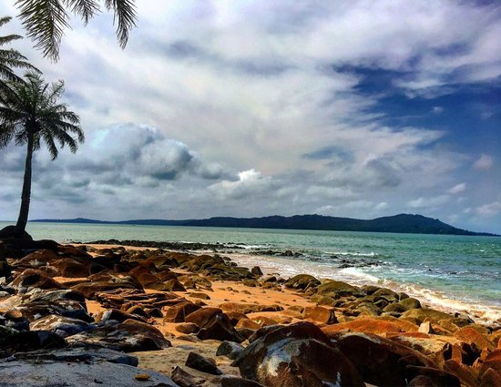
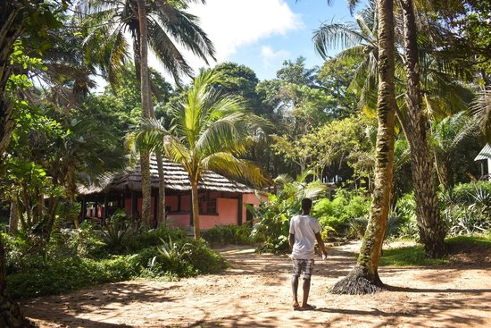
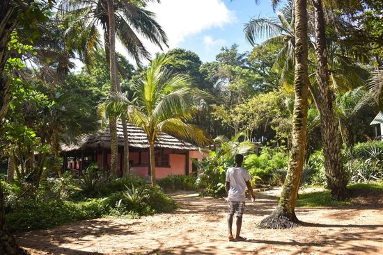

İles De Los
Conakry'den bineceğiniz feribotla yaklaşık kırk dakikada ulaşabileceğiniz Iles de Los, yemyeşil ormanlara ve bakir plajlara sahip cennet bir adalar topluluğu. Portekizce adının tercümesi ise ‘İdollerin Adası’ anlamına geliyor. Iles de Los su sporları ve denizden çıkmış taze balık ziyafeti yapabileceğiniz restoranlarıyla da ünlü. Şehrin kuzeydoğusunda bulunan Cape Verga ise ülkenin en güzel plajlarının bulunduğu alternatif bölgelerden. Şehirden bir araç kiralayarak birkaç saatte bölgeye ulaşabiliyorsunuz.


|
 

|